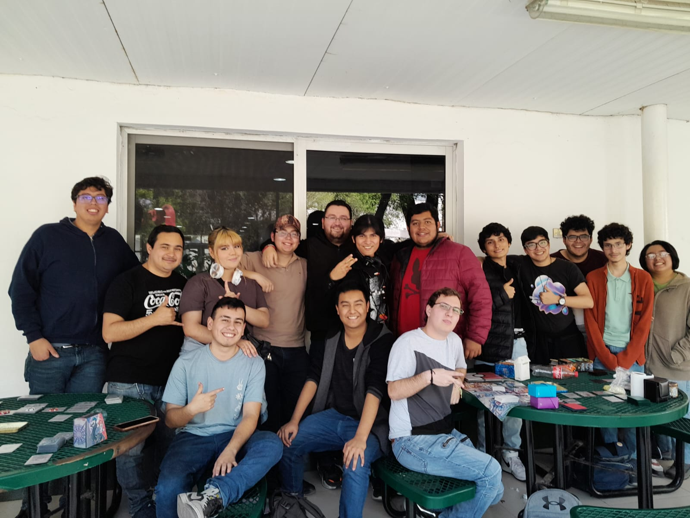

Club de Juegos de Mesa de FIME: Fomentando la Diversión y el Compañerismo
Israel Alejo

En la Facultad de Ingeniería Mecánica y Eléctrica (FIME) de la Universidad Autónoma de Nuevo León, un grupo de estudiantes ha encontrado una forma única de unirse y disfrutar de su tiempo libre: los juegos de mesa. Conversamos con Miguel Estrada, miembro fundador y líder del Club de Juegos de Mesa de FIME, para conocer más sobre esta iniciativa y su impacto en la comunidad estudiantil.
Inicialmente, Miguel compartió cómo todo comenzó en 2019, con la simple introducción de un juego de mesa en la facultad, lo que despertó el interés de varios compañeros y dio inicio a la formación del grupo. Desde entonces, estuvieron jugando hasta el estallido de la pandemia, la cual interrumpió sus actividades por mas de 2 años.
A pesar de todas las dificultades, pudieron retomar sus actividades y ahora los miembros del club han encontrado un equilibrio entre sus estudios académicos y su pasión por los juegos de mesa, reservando tiempo durante sus horas libres y entre los horarios de clases para disfrutar de esta actividad. Para ellos, el compañerismo, la diversión y el escape del estrés académico son algunas de las principales motivaciones para seguir jugando. Además, encuentran que los juegos de mesa ofrecen una oportunidad única para resolver problemas y trabajar en equipo
Aunque aún no organizan torneos de manera regular debido a su falta de organización, están interesados en hacerlo en el futuro. Actualmente, se comunican y organizan a través de grupos de WhatsApp dedicados para avisos y discusiones.Cuando se les preguntó sobre el apoyo que les gustaría recibir de la facultad, expresaron su deseo de tener un espacio asignado para realizar sus actividades sin problemas y la posibilidad de contar con lockers para almacenarlos de manera segura.
En cuanto a los requisitos para unirse al club, Miguel enfatizó que no hay restricciones específicas, aunque valoran el tiempo libre, el espíritu competitivo y la responsabilidad.
Mirando hacia el futuro, el objetivo principal del Club de Juegos de Mesa de FIME es consolidar su estructura y organizar torneos de manera más profesional, aprovechando el crecimiento constante de su membresía, que actualmente cuenta con más de 40 miembros oficiales, todo esto para en un futuro no muy lejano ser capaces de realizar torneos o incluso participar en competencias.
En resumen, hemos podido vislumbrar que el Club de Juegos de Mesa de FIME es más que un simple grupo de entretenimiento; es un espacio donde los estudiantes se unen, socializan y disfrutan de su pasión por los juegos de mesa, a la vez que fortalecen su sentido de comunidad en la facultad.
EVENTOS PROXIMOS
CONCIERTO BACH ORQUESTA CAMARA
Lunes 26 - 8:00 PM - AULA MAGNA
OBRAS DIA MUJER
Lunes 4 Marzo - 8:00 PM - AULA MAGNA
CONCIERTO MUSICA DEL NORTE
Jueves 19 - 3:00 PM - AULA MAGNA
CONCIERTO OSUANL
Jueves 29 - 8:00 PM - TEATRO UNIVERSITARIO
INAUG. ARTISTICA
Miercoles 28 - 12:00 PM - ESPACIO ARTE FIME
Club de Ajedrez de FIME: Donde la Estrategia se Encuentra con la Amistad
Israel Alejo
En la Facultad de Ingeniería Mecánica y Eléctrica (FIME) de la Universidad Autónoma de Nuevo León, el Club de Ajedrez ha ganado popularidad entre los estudiantes que buscan una forma única de ejercitar su mente y fomentar el compañerismo. Conversamos con Jaziel Cárdenas, miembro entusiasta del club, quien nos brindó una visión más profunda de la dinámica y la experiencia que ofrece esta comunidad ajedrecista.
Para Jaziel, la motivación para unirse al club surgió del atractivo inherente del ajedrez como deporte que desafía la mente y fomenta la inteligencia. Aunque se considera un novato en el juego, su entusiasmo y dedicación lo llevaron a alcanzar el primer lugar en la categoría de Novatos en una competencia reciente, destacando su rápida progresión en el mundo del ajedrez.
Llevando sus habilidades más allá del tablero, el Club de Ajedrez de FIME ofrece un ambiente acogedor y tranquilo durante las reuniones, donde los miembros no solo disfrutan de partidas amistosas, sino que también se sumergen en el estudio de estrategias y movimientos históricos de jugadores profesionales.
El compromiso del club con la excelencia se refleja en su horario flexible y accesible para todos los interesados. Además de las partidas en línea, los miembros se reúnen los miércoles en el segundo piso del polideportivo de fime a partir de las 7:30 p.m., brindando una oportunidad perfecta para aquellos que deseen participar en persona y compartir su pasión por el ajedrez con otros entusiastas.
Jaziel destaca la importancia del ajedrez como herramienta educativa, ya que desarrolla tanto el pensamiento crítico como el abstracto. Su experiencia en competencias intrauniversitarias ha sido positiva, contribuyendo a su desarrollo personal y a su capacidad de concentración.
En resumen, el Club de Ajedrez de FIME no solo ofrece una oportunidad para mejorar en el juego, sino que también crea un ambiente acogedor donde los estudiantes pueden desarrollar habilidades cognitivas y disfrutar de la compañía de sus compañeros ajedrecistas, mientras exploran la riqueza y la emoción del juego mental más antiguo del mundo.